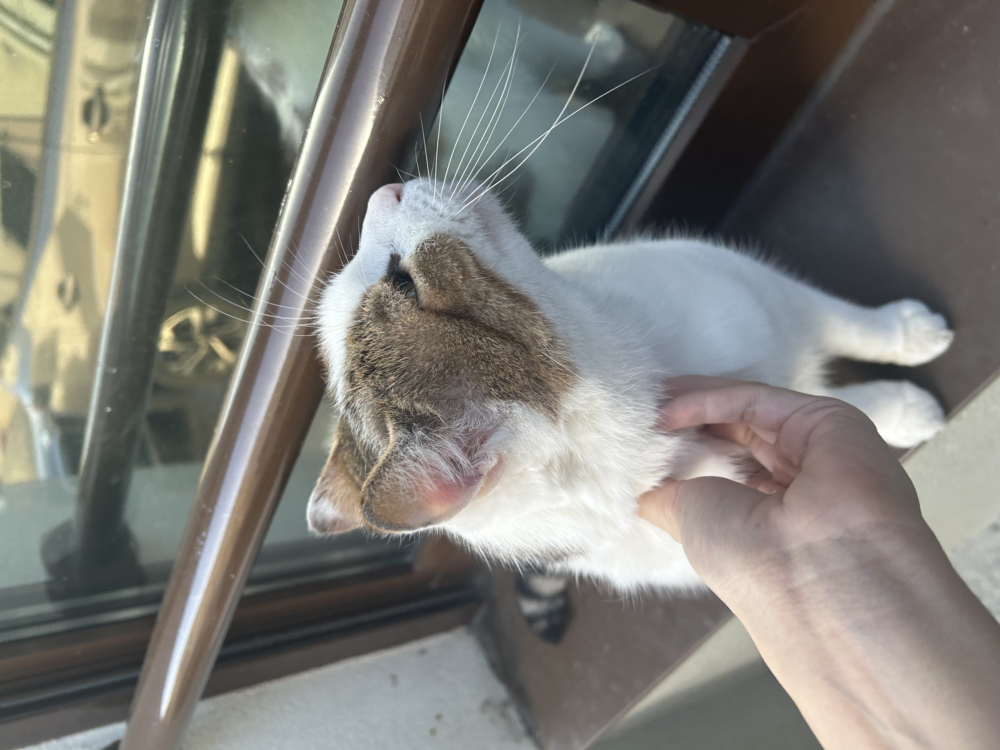
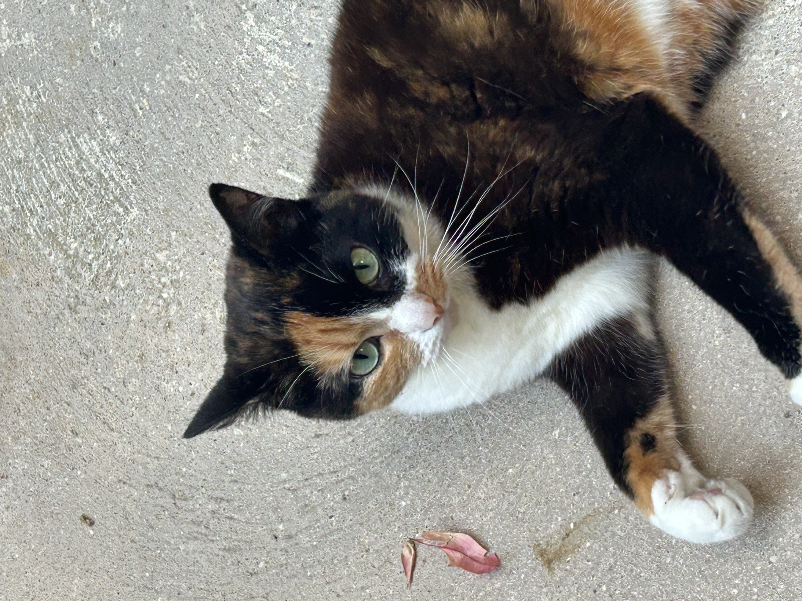
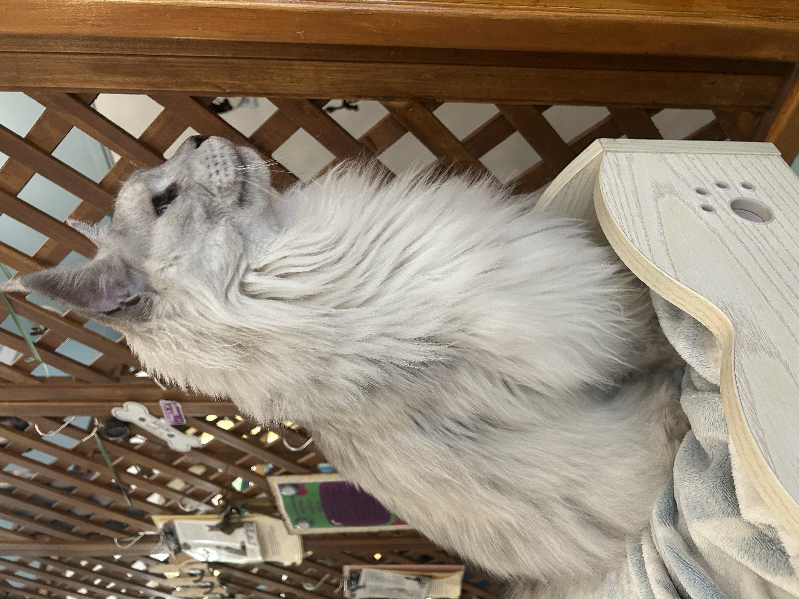

Every cat deserves a sunny spot to call home.
We're a small, no-kill shelter helping rescued cats find the people they'll spend the rest of their nine lives with.
Looking for a home
Meet the cats
Each of these friends is spayed/neutered, vaccinated, and ready to go. Tap any of them to say hello.



It's simpler than you think
How adoption works
01
Come say hi
Visit us during open hours and spend time with the cats. No appointment needed.
02
Have a chat
We talk through your home and routine to find the right match — for you and the cat.
03
Go home together
A small adoption fee covers vaccines and care. Then your new friend comes home.
Come by
Visit & get involved
Where12 Rue des Petits Chats, 75019 Paris
Open hoursWed–Sun, 11:00–18:00
Emailhello@sunbeamcats.example
VolunteerWe always need help with feeding, socializing, and weekend events.
FosterShort on space? Foster a cat until they find a home.
DonateEvery euro goes to food, litter, and vet care.